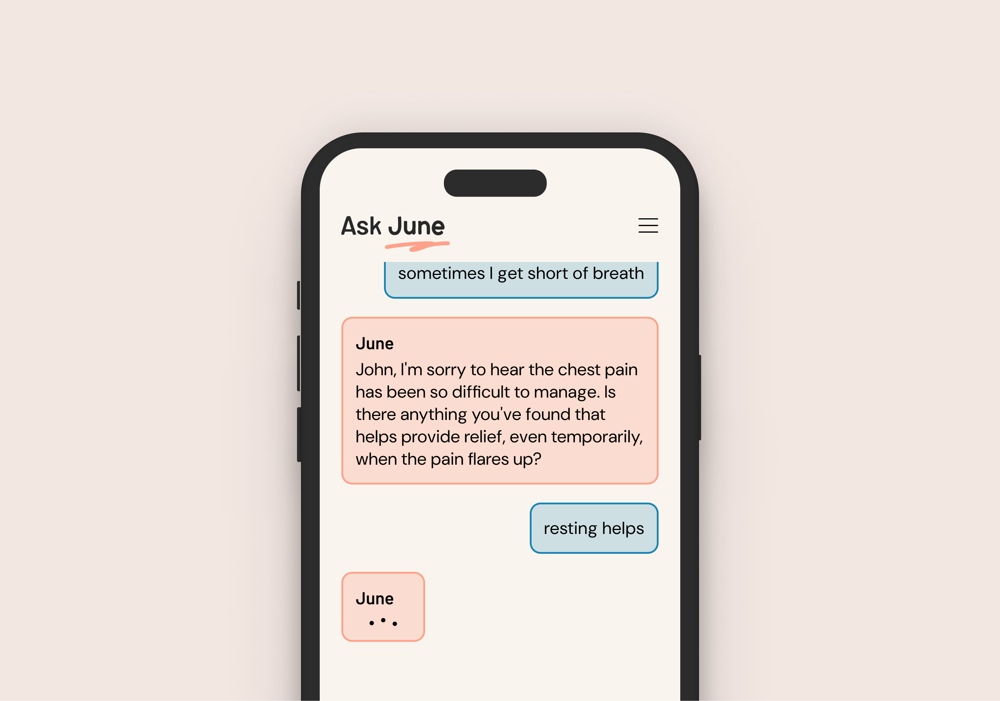
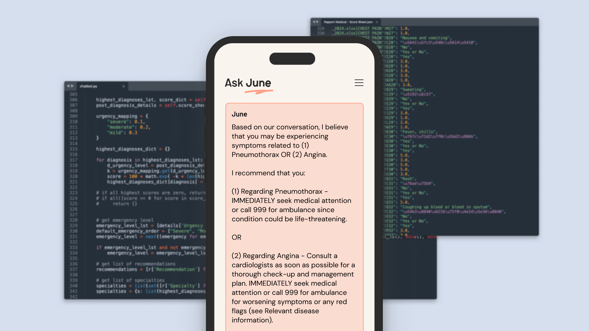
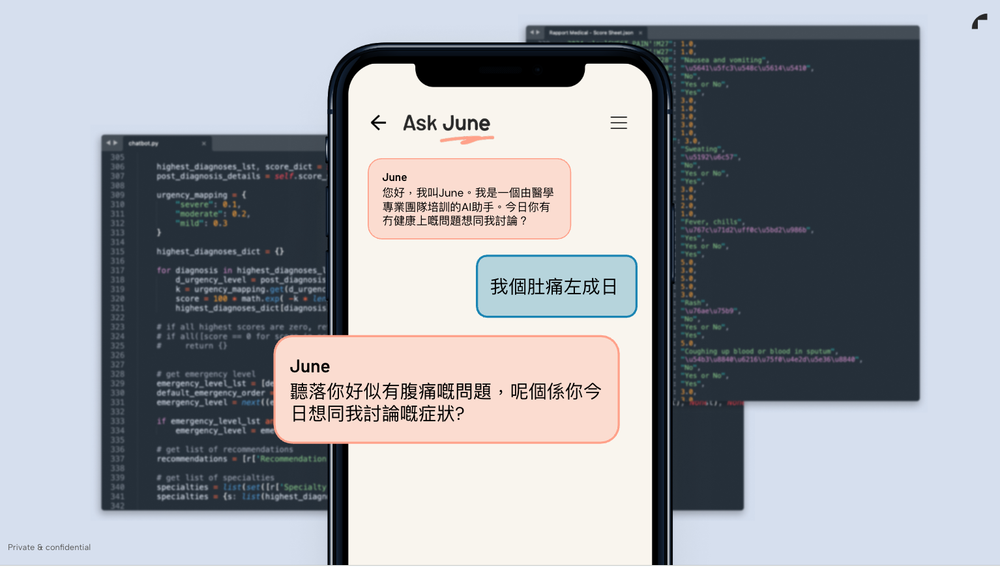

AskJune
Your new AI health assistant.
AskJune is an AI Health Concierge that handles patient health enquiries/engagement 24/7, intelligently routes patients to the doctors/providers and services in your clinic network, handles booking and conducts pre-consultation evaluation and analytics to provide diagnostic and clinical support for doctors.
Features & Functions
AskJune provides a conversational, always-available front door to your clinic.
Helping patients explain their concerns in their own words, then turning that into structured information, triage and bookings.


Understands free-text patient concerns
- Feels like a real conversation, not a fixed questionnaire.
- Asks intelligent follow-up questions to build a clinically useful picture.
- Understands local language and slang, translates free-text dialogue into structured medical data clinicians can use.
Routes to the most suited doctor/service
- Connects patients directly to your booking flow and the right doctors/services.
Converts conversations into structured clinical data
- Produces evaluation summaries for consulting doctors, with next steps and red-flag awareness.
- Uses your inputs and proprietary models to suggest likely related health issues and level of urgency, supporting decision-making and patient education.
Integrates into your existing ecosystem
- Works with your website, booking system and internal workflows.
- AskJune sits on top of your current setup without disruption.
Use Cases and Deployment Options

On-site kiosks and tablets

Database

Web App

Mobile App
How It Works
How AskJune works in practice: From question to consultation.
-
Patient asks in their own words
-
AskJune understands and clarifies
-
AI triages urgency and needs
-
Patient is matched and booked
-
Doctor receives structured summary



Benefits:
- More qualified bookings.
- Earlier patient engagement.
- Better patient trust.
- Reduced admin and front-desk burden.
- Stronger clinical efficiency.
Meet patients where they already are.
Patients are already searching for answers online. AskJune gives clinics a safe, clinically-aligned way to meet them there, guide them with reliable information and connect them to appropriate care in your own ecosystem.